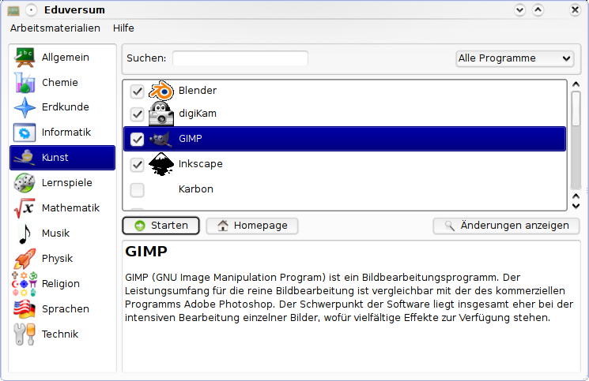

Informationen zur Benutzung von Seminarix und der LiveCD
Der Programmstarter
Durch Doppelklick oder Klick auf einen Startbutton wird das jeweilige Programm gestartet. Auch nicht auf der CD enthaltene Programme sind im Menüsystem aufgeführt. Dies ist dann an der geänderten Buttonbeschriftung("Programm installieren" statt "Programm starten") erkennbar. Wird der entsprechende Eintrag angeklickt, erfolgt eine kurze Rückfrage ob das entsprechende Programm nachinstalliert werden soll.
In der Beschreibung zum jeweiligen Programm befindet sich auch ein Link zur Homepage auf der Sie noch mehr Informationen zum jeweiligen Programm finden.

Ein dauerhaftes Homeverzeichniss anlegen
Es kann auch ein persistentes Homeverzeichniss angelegt werden, in dem dann die änderung werden der Nutzung der LiveCD gespeichert werden können um so nach dem nächsten Neustart der LiveCD diese wieder nutzen zu können.
Mit sidux (ab Eros) kann ein dauerhaftes (persistentes) Live-System auf einer beschreibbaren Partition eingerichtet werden, indem die Bootoptionen 'fromiso' und 'persist' kombiniert werden.
sidux nutzt aufs, um mittels "copy on write" neue oder veränderte Daten im RAM zu speichern. Mit der Bootoption persist können diese Daten auf derjenigen Partition gespeichert werden, auf welcher sich das fromiso-CD-Abbild befindet.
persist verhilft zu einem Live-System, welches alle automatisierten Routinen der sidux-Live-CD enthält (zum Beispiel Hardwarekonfiguration), gleichzeitig aber mit persönlichen Daten und Einstellungen gebootet werden kann.
Zur Verdeutlichung: das System speichert nicht die Einstellungen des graphischen Servers X (Grafikkarte, Tastatur, Maus) oder der Netzwerkkarte, sondern nur die persönlichen Daten und Einstellungen.Somit ist es ideal, um es auf mehr als einem Computer zu nutzen.
persist ist ideal in Kombination mit install-usb-gui, um einen bootbaren USB-Stick mit eigenen Daten und selbstgewählter Software zu erstellen.
Die persönlichen Daten werden in einem Unterverzeichnis der fromiso-Partition gespeichert. Wenn dieses Unterverzeichnis noch nicht vorhanden ist, wird es automatisch erstellt, wenn die Bootoptionen fromiso und persist gemeinsam benutzt werden.
Persist auf einem FAT-Dateisystem (vorformatiert auf den meisten Flash-Speichern) benötigt eine große Datei, die als Loop-Gerät benutzt wird. Diese Datei muss formatiert werden (empfohlen ist ext3).
Diese Datei soll sidux-rw benannt werden und im Root-Verzeichnis der FAT-Partition (des mit FAT formatierten Flash-Speichers) platziert werden. Wenn die Partition zum Beispiel beschreibbar auf /media/sdb1 eingehängt ist und eine Datei mit 1GB Größe erstellt werden soll, um als dauerhaft genutzte Partition zu fungieren, werden folgende Befehle genutzt (es wird kein root benötigt, wenn der user Schreibrechte hat):
disc="/media/sdb1"
size=1024
dd if=/dev/zero of=${disc}/sidux-rw bs=1M count=${size} && echo 'y' | /sbin/mkfs.ext3 ${disc}/sidux-rw
Mit NTFS formatierte Partitionen (Standard für Windows NT/2000/XP/Vista (TM)) können NICHT mit der Bootoption persist benutzt werden.
Was nicht mehr auf die CD gepasst hat
OpenSource-Programme entwickeln sich ständig weiter, tendenziell werden die entsprechenden Pakete immer umfangreicher. Aus diesen Gründen musste daher aus Platzgründen auf einige Pakete verzichtet werden, die noch in der letzten, noch auf Kubuntu 6.06 basierenden Version enthalten waren. Diese können jedoch alle (bis auf NVU) direkt aus dem Programmstarter heraus nachinstalliert werden.
- KDissert
- KSociograma
- QGis
- Gambas
- Lazerus
- Gimp
- KView
- blinKen
- Einstein Puzzle
- gTrans
- KAnagram
- KHangman
- Glame
- Kletters
- Linux Letters and Numbers
- Lmemory
- Pimgus
- Tipptrainer
- TuxType
- Octave
- RKWard
- Amarok
- Glame
- Celistia
- Weltzeituhr
- Xoscope
- Kiten
- KVerbos
- KTechlab
- PCB
- qcad
- NVU
NVU wurde durch Quanta ersetzt, da NVU nicht in Debian enthalten ist. Die Einarbeitung in Quanta erfordert zwar anfangs einen etwas höheren Lernaufwand, dafür hat man dann aber ein weitaus leistungsfähigeres Werkzeug zur Verfügung, welches außerdem wesentlich sauberere Webseiten generiert.
Mitwirkende des sidux-seminarix-Projektes:
Thomas Kross (captagon)
Roland Engert (RoEn)
Björn Jilg (BlueShadow)
Ferdi Thommes (devil)
Hendrik Lehmbruch (hendrikL)
Horst Tritremmel (hjt)
Dinko Sabo (cobra)
Fabian Wuertz (xadras)
Wolf-Dieter Zimmermann (emile)
Besonderer Dank geht an das gesamte sidux-Entwicklerteam, dessen hervorragende Leistung dieses Projekt erst möglich gemacht hat.
Weitere Informationen zur Installation von Seminarix finden Sie in den Manual-Pages von sidux.
sidux-manual deutsch
sidux-manual english
sidux-Wiki deutsch
sidux-Wiki english
Sollten Sie sich mit Verantwortlichen für dieses Projekt in Verbindung setzen wollen, schreiben Sie bitte bei informellen Fragen eine Email an info@seminarix.org,
oder bei technischen Fragen eine Email an edu@sidux-ev.de